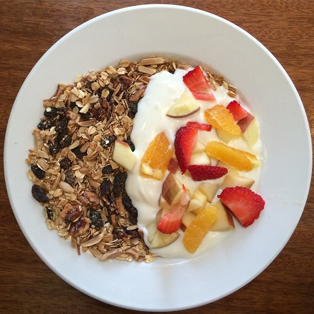

Granola

Ingredients
- Rolled Oats 3 Cups
- Slivered Almonds 1 Cup
- Cashews 1 Cup
- Shredded sweet coconut 3/4 Cup
- Brown Sugar (dark) 3 fl. oz
- Maple Syrup 3 fl. oz
- vegetable oil 1/4 Cup
- Salt 3/4 tsp
- Raisins 1 Cup
Instructions
- Preheat Oven to 250 F
- In a large bowl, combine oats, nuts, coconut, and brown sugar
- In a seperate bowl, combine maple syrup, oil and salt.
Combine both mixtures and spead onto 2 sheet pans. Cook for 1 Hr 15 minutie, stirring every 15 minutes to achieve an even color.
- Remove from oven and transfer to a large bowl. add Raisins and mix distributed.